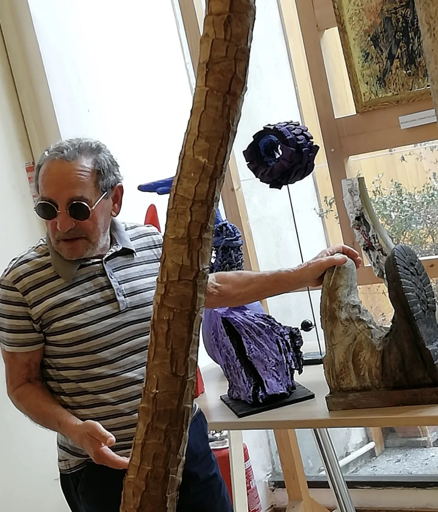
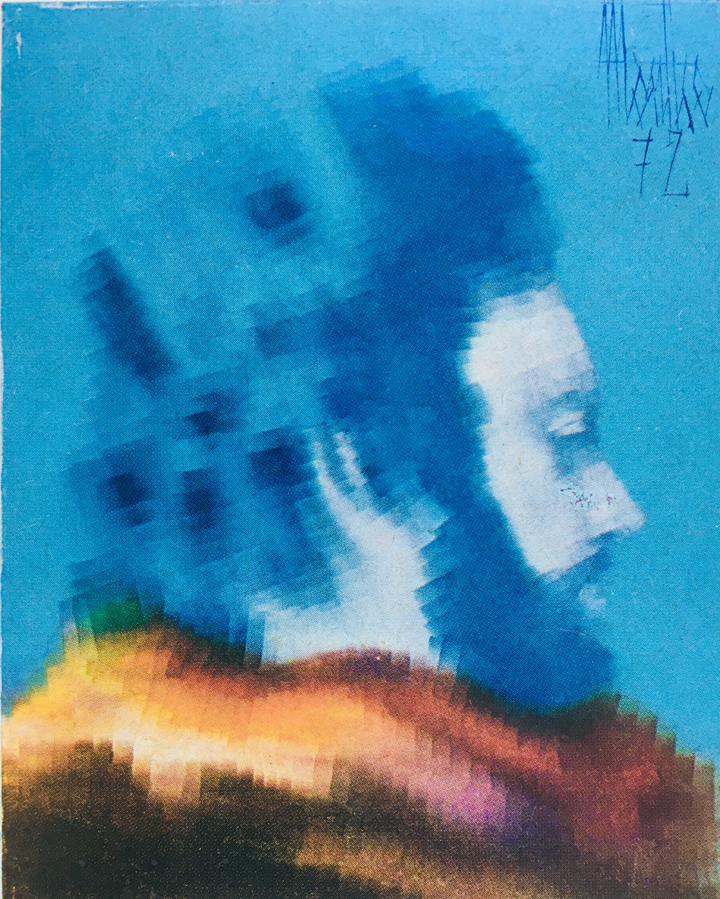

From Milan to the Lodi countryside, Gigi Montico has made painting his principal and continuous work, alongside family, sport, friendships and life in the local community.
The move from Milan to Dovera did not interrupt his career. It changed its context, bringing the practice closer to local communities and new forms of research.

The artist

His self-portrait
1961first documented solo exhibition in Milan
65 yearsfrom the first documented exhibition to today
95events, books and activities in the chronology
Career at a glance
A practice that changes form, not direction
The summary groups the register into five artistic periods. Select a bar to read the narrative and the main examples.
Selected period
Main points
≈ indicates an estimated placement.
Continuous research
Not one manner, but a succession of inquiries
Montico changes language when a line of inquiry has reached its creative limit. Works from different periods can therefore look like they came from different artists.
The continuity of his career does not mean a fixed signature style. Spray, monochrome, palette knife, figuration, abstraction, collage, matter, interventions in space and digital images are stages of the same impulse: to remain in motion. This choice may have made commercial recognition less immediate, but it kept the creative process open.
1960-1980
Figure, gesture and matter
Spray, monochrome, palette knife and colour accompany the move from figuration toward a freer painting.
1980-1990
Space, collage and construction
Overlapping planes, inserts and abstract structures turn the surface into a mental space.
1990-2000
Surface, landscape and intervention
The research opens toward commissions, architectural interventions, international exhibitions and new relationships.
2000-2013
Ecology, civic art and community
Recovered materials, schools, municipalities and shared projects bring painting into the territory.
2010-today
Terminal Realism and new images
Books, sustainability, digital images and dialogue with Terminal Realism extend the research beyond the canvas.
Painting has been his principal and continuous work, within a life that also includes family, sport, friendships and community.
Continuity does not mean isolation. Montico built a professional career alongside private life and place: Milan and its art circuit, Dovera and local communities, teaching, collaborations and publications.
Milanrecognition and the art circuit
Doverastudio, family and local life
Continuityresearch, relationships and new images
Documented chronology
Chart and biography register
The PDF brings together the two-year chart and every entry in the chronology published on this page, with estimated dates clearly marked.
May 16-30, 1961 First solo exhibition at Galleria Lux in Milan, at 7 Via Fiori Chiari, presented by Professor Arnaldo Filone, the gallery owner.
1969 Exhibitions at Galleria Selenia in Milan and Villa Argentins in Cortina d'Ampezzo.
1970 Exhibitions at Galleria Motivi d'Arte in Rapallo and Galleria El Fogher in Treviso; a group exhibition in Diamante with Cirillo and Russo Vitale, August 17-31; participation in a group exhibition in France.
December 18, 1970, estimated date Solo exhibition at Galleria Pegaso, 7 Via Brera, Milan, in support of those affected by the earthquake in Pakistan. The initiative was featured in the French magazine La Revue moderne.
May 15-25, 1971 Palazzo Gotico, Piacenza: presentation of the Gruppo P4 manifesto, featuring works by Gherardi, Razzetti and Montico, organised by Domenico Giuffrè. The exhibition continued for several months along the entire Trebbia Valley, including Bobbio.
June-November 1971 Exhibitions at Galleria Maddalena in Milan (June), in Senigallia (August) and at Galleria Agrati in Monza (November); participation in Germany.
July-August 1971Nomi d'oggi e nomi di domani dell'arte italiana (Today's and Tomorrow's Names in Italian Art), group exhibition at Galleria Merlo, 5 Via Cavallotti, Vigevano.
1972 Exhibitions at Galleria Merlo in Vigevano in April and at Galleria del Castello in Moneglia. From June 15 to August 20 he took part in the major Pro Loco group exhibition in Moneglia; from September 23 to October 1, by invitation of the Lodi Department of Culture, he exhibited in the halls of Museo Civico di Lodi.
1973 Exhibitions at Fondazione Europa and Galleria Il Vertice in Milan; from May 16 to 28, he exhibited at Il Bottegone, 10 Via Panizza, Milan. He also exhibited at Galleria Magimawa, 7 Via Rismondo, Turin, and Centro Culturale Puecher in Casalpusterlengo. From June 9 to 22, he exhibited at Galleria d'Arte Moderna Nuovo Fauno in Piazza Bra, Verona.
Summers of 1973 and 1974 Exhibitions at Forte Village in Santa Margherita di Pula (Cagliari), Sardinia, with the Centro Artistico Milanese. The Centre's catalogue was presented in both seasons.
January 18-31, 1974 Exhibition at Centro Artistico Ramella, Via San Vito 6, Milan.
October 16, 1975 Opening of the Antologica di Montico at Galleria 2 Archi in Milan, inaugurating its 1975-1976 season; in the same year, group exhibitions at a Câmara Municipal in Portugal and, in Lugano (Switzerland), at Galleria La Madonnetta and Palazzo delle Fiere. Around 1975 (estimated year), a cultural meeting at the Portuguese Consulate General in Milan on February 10.
March 28 - April 4, 1976Due modi diversi di esprimere l'arte (Two Different Ways of Expressing Art), featuring Montico and the painter Oresta at Centro Puecher del Lodigiano in Piazza del Popolo, Casalpusterlengo, organised by artistic director Ermanno Peviani.
1976 Exhibition at the Municipality of Pizzighettone; exhibition at Galleria La Madonnetta in Lugano (Switzerland), November 5-18. The magazine Ciao Milan also awarded a silver medal for a special mention of Gigi Montico.
February 10-23, 1979Ten Years of Painting, 1965-1975, exhibition at Galleria d'Arte Città di Crema, 24 Viale Repubblica, directed by Giovanni Arrigoni.
1980 Exhibition at Galleria Il Borgo in Genoa; from March 8 to 24, an exhibition of works from 1968-1978 at the Saletta Cremonesi, Centro Sant'Agostino, Crema.
1982 - 1983 Galleria Lodi-Arte, Lodi (1982). In May 1983, a retrospective in Somaglia organised by Centro Artistico Culturale Skorpios with the Municipality: in the municipal rooms on May 22 and 29, and at the Skorpios restaurant on weekdays.
1984 A second exhibition with Centro Artistico Culturale Skorpios; the venue has not yet been identified.
December 7, 1985 Opening of a retrospective at the artist's home in Dovera, spanning figurative painting, abstraction and conceptual optical or semi-optical art. During the 1980s, provisionally around 1985, exhibitions abroad organised by Otello Guidi.
1986 - 1988 On March 27, 1986, the group exhibition Tre espressioni dell'arte contemporanea at Castello Mediceo in Melegnano, with Mario Ferrario and Ugo Maffi; an exhibition at Palazzo Rho, Borghetto Lodigiano, August 23-31, 1986. A retrospective at Accademia del Sale in Dovera, an association active approximately from the 1980s into the 1990s at Montico's studio, followed in 1987, and an exhibition at Palazzo Comunale in Brembio in 1988.
1989 On February 4, a 2.50 × 1.50-metre painting by Montico was presented at the inauguration of the Gratte-Ciel sports complex in Villeurbanne (France), intended for permanent display in its main entrance hall. Pierre Oresta put the artist in contact with the handball community and wrote a critical text on his painting for the occasion. Montico also exhibited at Galleria Il Gelso in Lodi that year.
January 24 - March 11, 1991 Exhibition at Galerie David, 42 Rue Sala, Lyon (France).
1992La filosofia figurata di Montico, Biblioteca Comunale, 32 Via Cavallotti, Casalpusterlengo, October 24 - November 1; exhibition at the Italian Cultural Institute in Lyon (France), with Galerie David, December 9, 1992 - January 14, 1993, at 57 Place de la République.
1993 and 1995, estimated dates Around 1993, presentation of the painted columns and wall at the Patrini restaurant in Monte Cremasco. Around 1995, inauguration of the renovated Banca Centropadana premises in Boffalora d'Adda, with columns and ceiling painted by Montico.
December 12-20, 1998Montico's Arte Povera and Surrealism, Sala della Pace, Vaiano Cremasco; during the same period he held his third exhibition in Lyon (France).
From 2001Art from Sorted Waste, a travelling project of objects and paintings made with recycled materials, hosted by municipalities across the Crema area, including Offanengo, Vaiano, Agnadello, Spino d'Adda, Rivolta d'Adda and Pandino. The stop in Offanengo and the Don Milani Cultural Centre stop in Vaiano Cremasco are provisionally placed around 2005 and September 15, 2007 respectively (estimated years). The Spino d'Adda and Agnadello stops are provisionally placed in 2009.
September 13-14, 2003 Exhibition by Gigi Montico at Villa Barni, Roncadello di Dovera. The exhibition opened at 10 a.m. on September 13 and continued the following day; the September 14 programme included a tour of the villa at 4 p.m. and a musical event featuring eighteenth-century melodies at 5 p.m.
May 7-31, 2005Riciclando artisticamente - Montico e i magnifici 150, in the entrance hall of Rivolta d'Adda Town Hall: objects and paintings made from recycled materials by primary-school pupils. Preparatory work takes place in April at the schools with their teachers; the exhibition opens on May 7.
2006 Exhibition with primary schools in Vaiano Cremasco.
2007Prima di buttarlo... prova a riciclarlo (Before Throwing It Away, Try Recycling It), at Castello Visconteo in Pandino, April 14-20, involved around 600 students in 24 classes. Award ceremonies followed for Arte da raccolta differenziata in Vaiano Cremasco on May 13 and for school art projects in Dovera on May 27.
2008 Another exhibition with schools at Castello Visconteo in Pandino.
From 2008, for about two years An extensive retrospective at Via delle Orfane 10, Lodi, already open to visitors in May 2008, with visits by appointment guided by the artist and Eugenio Gariboldi as the venue contact.
2009 In Brembio, he guides an activity with primary-school children, painting waste bins.
October 9-20, 2010Ispirazioni letterarie (Literary Inspirations) at Castello Visconteo, Biblioteca Comunale, Pandino. That year he also took part in the 7th edition of Semina Verbi, August 28 - September 12; the venue has not yet been identified.
February 5 - March 3, 2011Trasmutazioni at IIS Cesaris in Casalpusterlengo. In February 2011, a 25-painting exhibition was also hosted by Fondazione Ospedale dei Poveri in Pandino.
August 25 - September 11, 2011Semina Verbi (8th edition), group exhibition at the Parish Museum in Casalpusterlengo, curated by Amedeo Anelli.
November 26, 2011 - January 15, 2012 Exhibition inspired by Guido Oldani's poetry at Il Telegrafo in Melegnano, initially scheduled through December and subsequently extended.
May 4-18, 2013Syrinx III, group exhibition at the "Gen. Griffini" Middle School in Casalpusterlengo, curated by Amedeo Anelli.
December 4, 2013 - January 4, 2014For the 50th anniversary of Cesaris, group exhibition at IIS Cesaris in Casalpusterlengo within the "Cesaris per le Arti Visive" cycle.
June 27 - July 11, 2015Montico e la Bohème de Paris at the Caffè Letterario of Biblioteca Laudense, 3 Via Fanfulla, Lodi, organised by La Bottega dell'Artista: oils and watercolours inspired by his stay in Paris.
February 5 - March 7, 2016Pierluigi Montico - Brazilian Watercolors at IIS Cesaris in Casalpusterlengo.
April 26, 2017Dall'emozione alla rappresentazione (From Emotion to Representation), a short informal-painting course at La Bottega dell'Artista, 32 Via San Bassiano, Lodi.
Accademia del Sale
Active approximately from the 1980s into the 1990s at Montico's studio in Dovera, Accademia del Sale organised group courses in watercolour and oil painting, meetings at its premises and visits to museums in Milan. Its programme explored gesture and matter in contemporary painting, Pop art, conceptual art, hyperrealism, Arte Povera, ecological art and the transformation of recovered materials into artworks. In 1987 the association also promoted an agreement for members to support the artist's activity and purchase his works.
Works and collections
Museo Civico di Crema e del Cremasco holds Montico's Composizione, a 100 × 100 cm oil on canvas dated after 1975, donated by the artist in 1980 on the occasion of his exhibition at Sant'Agostino in Crema. View the artwork record in Lombardia Beni Culturali.
Works from his figurative period include L'uomo è la resistenza (1972). During the 1980s, art dealer Otello Guidi contributed to the international circulation of Montico's paintings, organising exhibitions abroad with works he owned.
Technique and method
Critical texts describe Montico's palette-knife work with pigment-rich oils, in successive passes that fuse colors without interrupting the process. This technical continuity creates dense, luminous surfaces where the figure tends to expand beyond its contour. A historical reference entry documents, among other works, Nudo orizzontale, an oil on canvas measuring 35 × 50 cm.
In his essay Variazioni e senso del movimento. La pittura di Montico, also reprinted in Il Cittadino on September 5, 1986, Gioacchino Li Causi interprets the artist's renewal as a joint exploration of movement and space: technique and content converge in art understood as an expression of historical and cultural reality, attentive to peaceful coexistence, politics and the mysteries of nature. Li Causi also observes the move from cool colours to warmer, brighter tones, applied with a palette knife in near-transparent layers.
From the initial figurative cycle (with works such as Sabrina and Milano), Montico moves toward more complex structures: layered planes, cardboard and wood inserts, and collage used as a device of memory and spatial construction.
Thematic nuclei from the books
Spatiality and imagination
Works such as Teatrino dell'infinito and Il sogno show the transition from representational painting to experiential painting, where the viewer enters a mental space.
Matter, ecology, social critique
In more recent readings (L'arte della sostenibilità and Digital art with AI support), Montico emerges as an artist attentive to material recovery and civic responsibility: from Centrale elettrica to Fabbriche, the image remains beautiful but never consolatory.
Critical framing
In his preface to Digital art with AI support, Guido Oldani, founder of Terminal Realism, notes that Montico gives new life to abandoned or discarded objects in order to construct images of nature. For Oldani, the novelty lies in a nature that increasingly resembles objects: a central feature of Terminal Realism, expressed by Montico with formal and chromatic vitality.
Painting in architectural spaces
Around 1995, Montico created painted interventions on the columns and ceiling of the bank in Boffalora d'Adda, now identified as Banca Centropadana Credito Cooperativo. The paintings accompanied the inauguration of its renovated premises. In the first half of the 1990s, at the Patrini restaurant in Monte Cremasco, at kilometre 27 of the Paullese road, he painted columns and a wall; the works were the subject of a dedicated presentation.
Television and circulation
Swiss television recorded footage or documentaries on Montico's activity, provisionally placed around 1985. The date remains highly uncertain, with references also predating 1980.
Professor Pierre Oresta's interpretation
Professor Pierre Oresta, who taught Italian at École Centrale de Lyon, interprets Montico's painting through rhythm, musicality and the construction of space. He relates the artist's explorations to Lucio Fontana's Spatialism, highlighting the dialogue between geometry, matter and freedom of gesture. In his reading, colour and irony soften the gravity of the compositions and invite contemplation. His reference to Eugenio Montale's distacco suggests a relationship with the world combining engagement and thoughtful detachment.